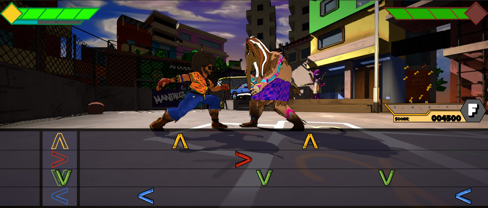
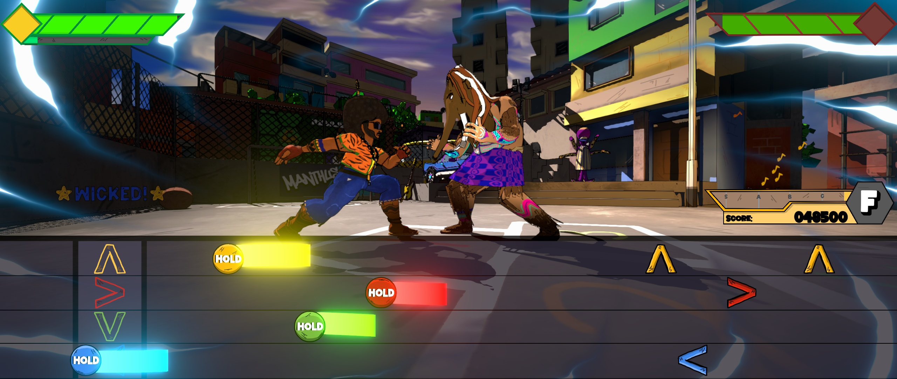
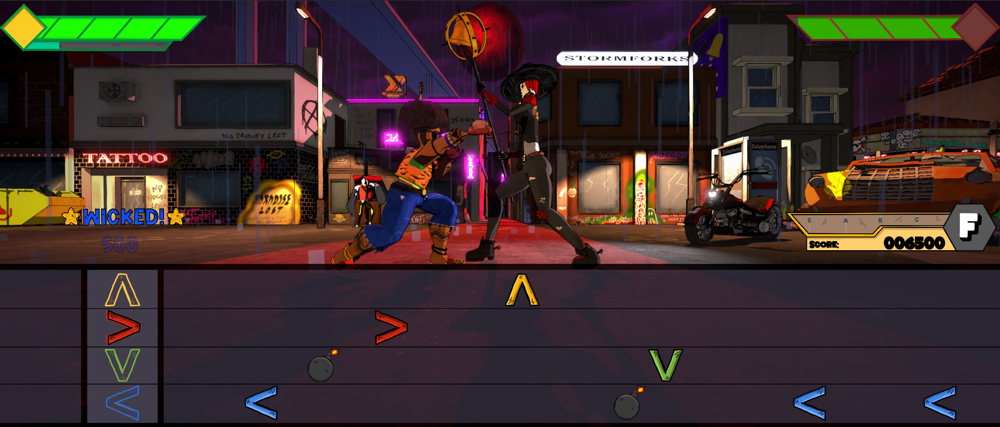
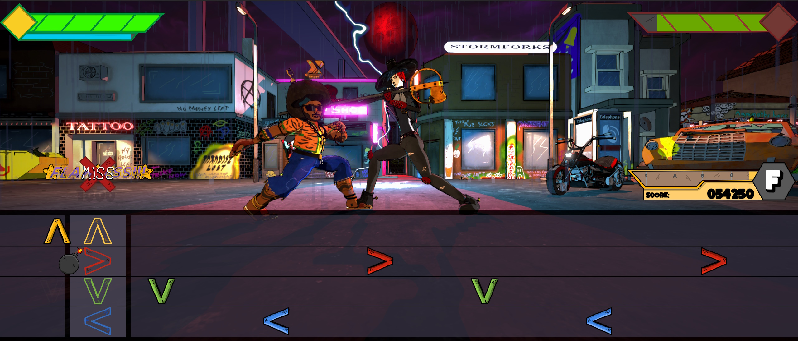
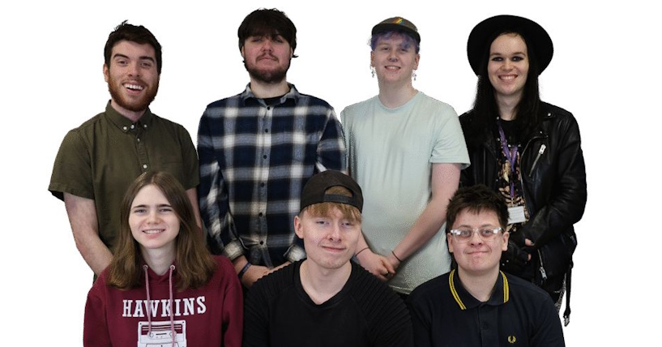

Dancebrawler
An award winning rhythm fighting game created in a team of 8, for our final year group project at university. I was responsible for all of the technical art, the song editor system, the dynamic menu camera, the animation system, the audio system and programming the UI.
I did a lot of shader work for this project, creating a HLSL toon shader with both self-shadows and object-on-object shadows. I also created an outline shader to compliment this, which is highly customisable and both of these effects are used on almost every asset in the game. I also created many more effects, including: Rain particles, a rain on the camera lens effect, a low hp noise-based vignette, the tail for the mash and hold notes, the special mode overlay, the special meter shine effect, a lightning strike effect and some parallax occlusion mapped roof tiles.
 We were invited to showcase this game at industry events including Impact!, GAMEX, and Gamebridge. We even won the GAMEX award for best trailer!
This project was my first proper hands-on experience with FMOD, which is a fantastic adaptive audio program with impressively intuitive unity integration. As a rhythm game the audio was very important in this project (Dancebrawler has a fully original soundtrack!), and I created a full notemap editor, similar in function to OSU!'s beatmap editor and other mapping tools in many rhythm games. It displays an audio waveform of the song supplied and allows designers to map notes to match the beat of the song. It offered many advantages, such as allowing us to easily add separate volume controls for SFX and music, add effects such as slowing down tracks mid-play, and randomising the pitch of sounds to make them less repetitive.

My favourite visual effect to work on was the lightning strike effect, as I haven't seen any similar solutions to mine and I am really proud of how the effect came out.
You can find out more about the game on its Itch page, here. Also check out our Instagram accounts! @SmallBagOPeas and @Dancebrawler.
